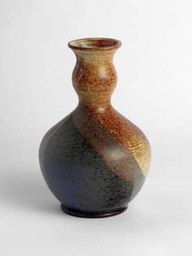
219.Vase bis zu 20 cm
Sortiment
Glasierte Vasen und dekorative Gefäße für Innenräume und Arrangements.

219.Vase bis zu 20 cm
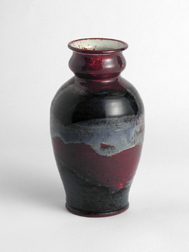
219.Vase bis zu 20 cm
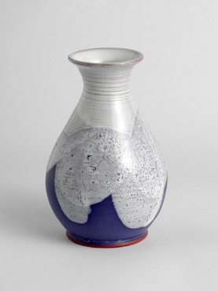
219.Vase bis zu 20 cm
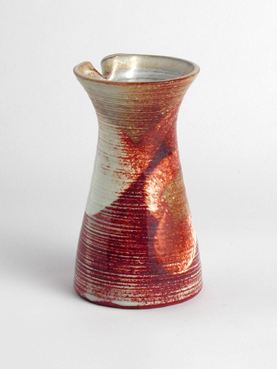
219.Vase bis zu 20 cm
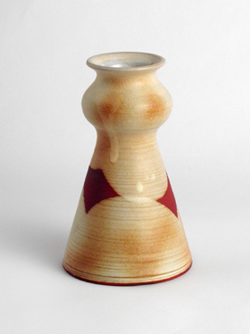
219.Vase bis zu 20 cm
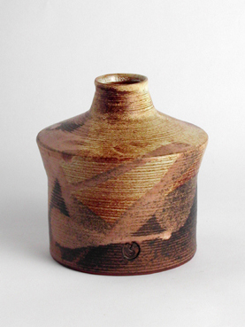
219.Vase bis zu 20 cm
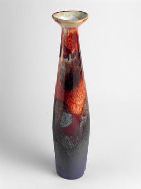
213.Vase - duenn - gross
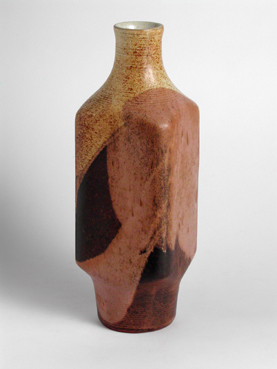
216.Vase - gross
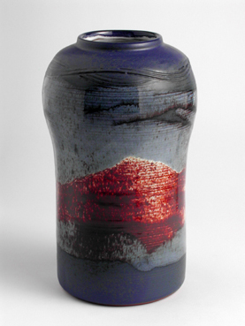
216.Vase - gross
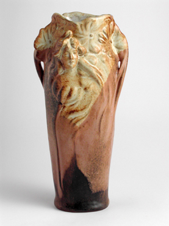
221.Jugendvase
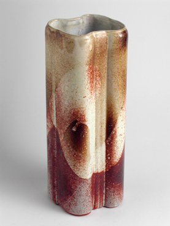
215.Vase - Achter
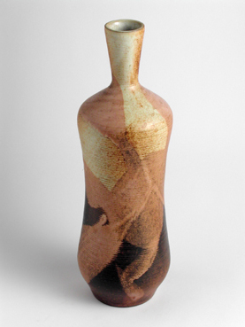
216.Vase - gross
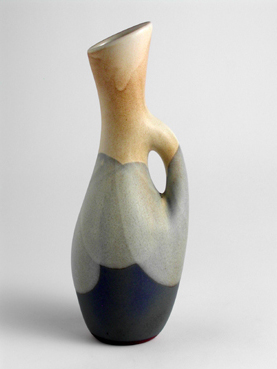
227.Vase mit Ohr - hoch
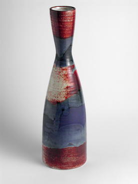
217.Vase - high
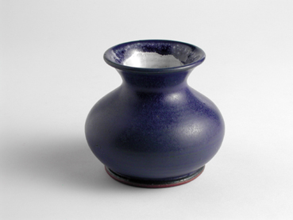
222.Bauchvase
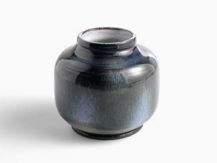
222.Kugelvase
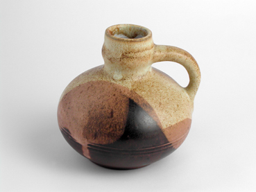
226.Vase mit Ohr - niedrig
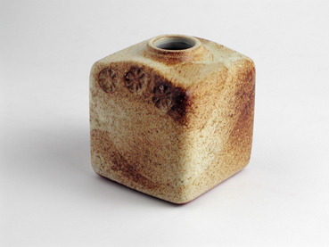
223.Kubusvase
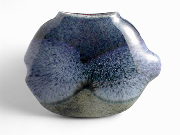
225.Haengevase - Fisch
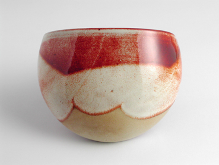
224.Haengevase
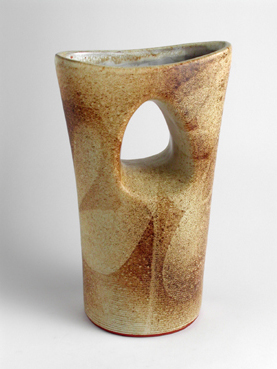
215.Vase mit Doppelhals, breite
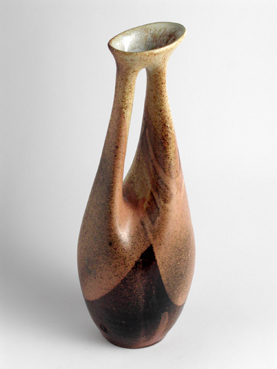
215.Vase mit Doppelhals, duenn
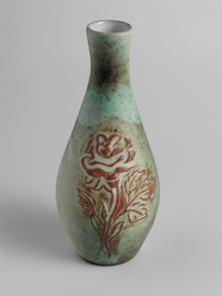
220.Vase mit Rose
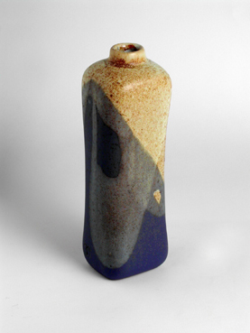
219 .Vase bis zu 20 cm
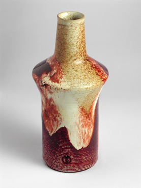
216.Vase - gross

000.